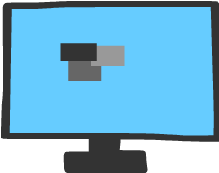
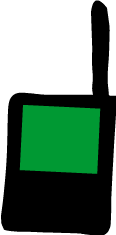
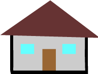
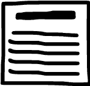

Proje Süreci
Bu proje, N.E.T Ortaokulu için geliştirdiğim "Bilgisayar Destekli Tasarım" konusuna özel olarak, 25 Kasım 2021 tarihinden beri geliştirilen HTML ve CSS olmak üzere 2 web tasarım elementiyle geliştiriliyor.
Şu anda projenin durumu geliştiriliyor, projeler eklenecek ve 30 Kasım'da T.T Dersinde Sunulacaktır. Yayınlandıktan sonra internet için bir adresi düzenlenecektir.
Kaldırılan Şeyler
Üstte erişebileceğin her sayfa için bir sembol olacaktı fakat boyut ve yerleştirme sıkıntılarından iptal edildi.




Yerine, çizimlerimde kullandığım karakteri bazı sayfalarda kullandım ve sayfaları çok daha iyi temsil ediyor.

Kodlayan, çizen, modelleyen ve bu sitedeki herşey @HarrisFerris (Ergün S.) Tarafından yapılmıştır. Başka birinin yaptığı ama bu sitede olan herşeyin kaynak, yapımcı gibi temel bilgiler verilecektir.